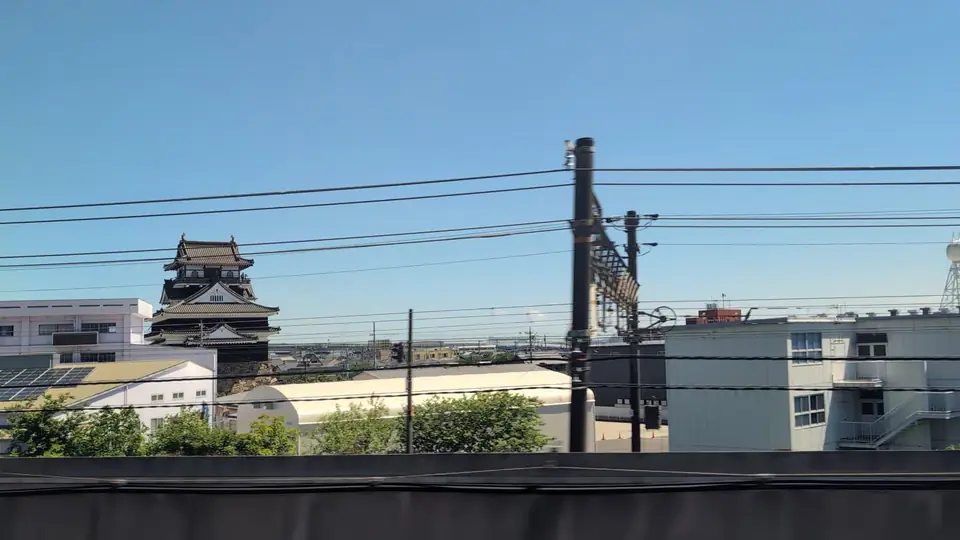

TOKAIDO SHINKANSEN WINDOW VIEW
Nobunaga's Kiyosu Castle, right beside the tracks
Nobunaga's trackside castle.

- Section
- Nagoya → Gifu-Hashima
- Seat side
- Seat E · mountain side
- Timing
- About 99 minutes after leaving Tokyo on a Nozomi train
- Photos
- 3 photos
What kind of castle is Kiyosu?
Kiyosu Castle was first built in the 15th century under the Shiba family, deputy governors of Owari Province, and grew dramatically as the base of Oda Nobunaga during the Sengoku era. From here Nobunaga set out to defeat the invading Imagawa Yoshimoto at the Battle of Okehazama in 1560, sealing his control of Owari. Kiyosu sat at a strategic crossroads between the Tokaido and routes to Mino and Ise provinces, and thrived as a castle town. After Nobunaga's assassination in 1582, the famous Kiyosu Conference — where Hashiba (Toyotomi) Hideyoshi, Shibata Katsuie, Niwa Nagahide and Ikeda Tsuneoki decided his succession and the division of his lands — was held at this castle, a well-known turning point in Japanese history.
More: Kiyosu CastleKiyosu City: Kiyosu Castle and the Kiyosu Conference (Japanese only)Kojodan: Castles visible from the Shinkansen
If you are traveling from Tokyo toward Shin-Osaka, start watching the Seat E · mountain side window as you approach Nagoya → Gifu-Hashima. If you are traveling toward Tokyo, the order is reversed.
What is the keep you see today?
In 1610, under Tokugawa Ieyasu's orders, the so-called Kiyosu-goshi ('Kiyosu Move') relocated the entire town and castle functions of Kiyosu to the new Nagoya Castle town. Kiyosu Castle was decommissioned then, and no castle-era buildings survive. The white-and-vermilion keep you see today beside the Gojo River is a modern reconstruction, built by Kiyosu City in 1989 for tourism and civic revitalization. It is not a faithful restoration of the historical keep, but its vivid coloring and prominent site have made it a fresh local landmark.
Inside, exhibits and interactive displays show how Nobunaga, Hideyoshi and Ieyasu were connected to Kiyosu. The keep, the river, the red Ote Bridge and the surrounding Kiyosu Castle Nobunaga Park form a scenic ensemble, especially popular in cherry-blossom season.
From the train, the red railings and white walls of the keep flash into view just north of the tracks, so look toward the Seat E window in advance. At Shinkansen speed the view lasts only a few seconds — but few castles along the Tokaido line come this close to the rails, which is exactly what makes the moment memorable.
Location at a glance
Open mapSwitch between the spot and the Shinkansen viewpoint.
How to catch Kiyosu Castle
1. Choose the window first
As you approach Nagoya → Gifu-Hashima, start watching from Seat E · mountain side. Use Live Guide while riding, or the map on this page before you board.
The clearest view lasts only a few seconds. Decide the seat side and window direction before it arrives rather than reaching for your camera late.
2. Highlights
A few minutes out of Nagoya, look for a red-and-white structure right beside the tracks on the Seat E (north) side. In cherry-blossom season or the evening, the vivid colors stand out against the Gojo River. At night the keep is illuminated, and the vermilion against the dark stands out especially well.
Kiyosu Castle in photos


 Related
Kirin Beer Factory
Related
Kirin Beer Factory
 Related
Solar Ark
Related
Solar Ark
 Related
Nagoya Station Skyline
Related
Nagoya Station Skyline